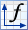
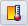
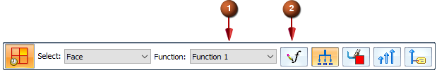
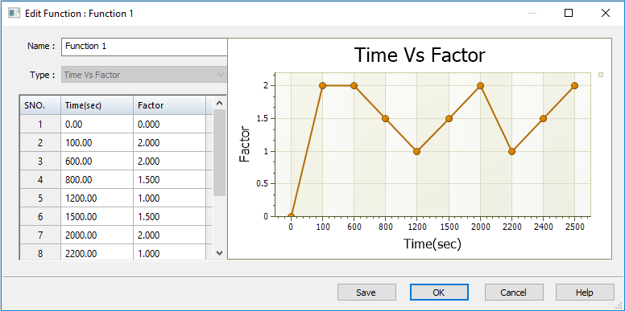
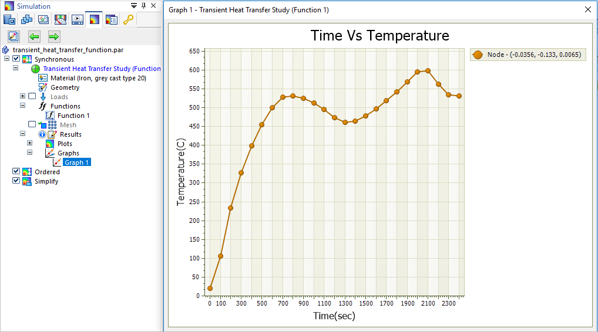
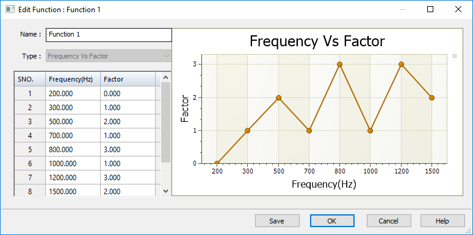
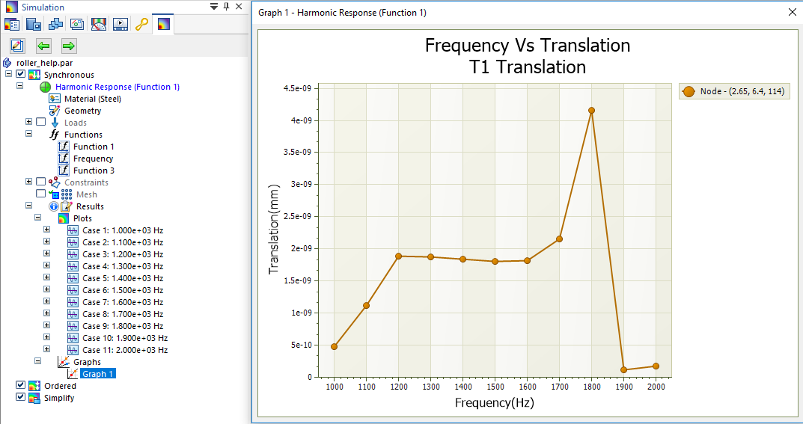

Use a function as variable input to loads
You can create a function using the Simulation tab→Function group→Function command

on the ribbon, or using the Create Function button on the command bar when creating or editing a load.-
For a transient heat study, you can use the Function command to define a thermal load that varies with respect to time.
-
For a harmonic response study, you can use the Function command to apply a structural load that varies with frequency.
-
Functions are not applicable to linear static, normal modes, or buckling studies.
-
Choose the Simulation tab→Function group→Function command .
-
In the New Function dialog box:
-
Type a name for the function, such as Time Function 1 or Frequency Function 1. You also can accept the default name.
-
Type the X and Y values in the table cells. Press Tab to apply each value. Press Enter to add each new row. You also can paste values from another source using the table context commands.
As you add or remove values for a function, a graph of the function loading trajectory is plotted in the dialog box.
-
Select the Save button to save the function.
The newly created function is listed in the Simulation pane, under the Functions node. You can double-click the entry to review and edit the function,
-
-
To use the function, select the appropriate load command.
-
In a transient heat study, choose one of the following load commands from the Thermal Loads group:

Temperature—Define a time-dependent temperature on selected entities.Heat Flux—Conduction through a solid medium in a part model.
Heat Generation—Conduction through a solid medium in an assembly.
Convection—Define heat transfer between a solid and a liquid or gas.
-
In a harmonic response study, select the Structural Loads group→Force command .
-
-
On the Loads command bar, select the name of the function you created from the Function list (1).
You also can create the load function from the command bar by selecting the adjacent Create Function button (2), instead of selecting the Function command on the ribbon.
Example:
-
Solve the study to apply the function.
-
In the Simulation Results environment, use the Probe command to select and graph the nodes of interest.
Function examples
For transient heat studies, you can use a function table to define a thermal load that is applied at variable rates with respect to the study end time. The X-axis values that you enter are based on the time intervals at which you expect heat flow to increase, and the Y-axis values represent the scale factor by which you expect the temperature to increase.
If at 100 seconds of operation you expect the temperature to double, enter 100 in the Time column and enter 2 in the scale Factor column.

Probing the nodal data for this transient heat transfer study, this graph of Time Vs. Temperature resulted from the application of the function table shown above to the study geometry.

For a harmonic response study, you can use a function table to define a structural force load that is applied at variable rates over different modal frequencies. The X values are the modal frequencies of interest, and the Y values are the loading factors. The objective is to determine the maximum displacement response of a structure or design based on known modal frequency values.

This graph of Frequency Vs. Translation shows the maximum displacement at the highest frequency mode, based on the frequency-dependent function table above.

When you define a harmonic response study, you also can use a Frequency Vs. Structural Damping function table to define variable structural damping, rather than using a fixed coefficient. To learn how to create this type of function, see Harmonic response studies.